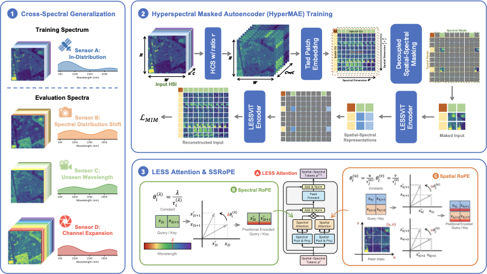
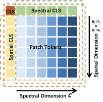
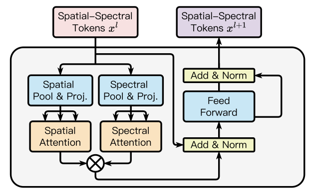
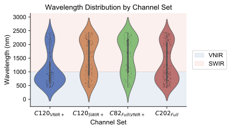
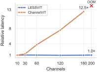
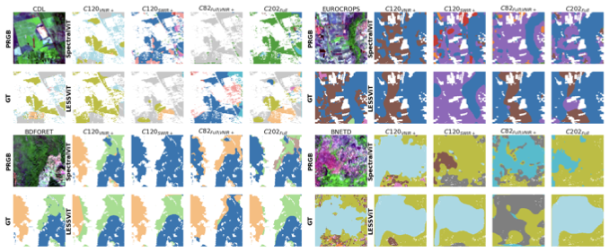

Abstract

Figure: Overview of LESSViT. (1) Cross-spectral generalization: train on a fixed spectral configuration and evaluate across sensors with varying wavelength coverage. (2) HyperMAE pretraining with decoupled spatial–spectral masking and hierarchical channel sampling. (3) LESS Attention with SSRoPE for efficient spatial–spectral modeling.
Key Contributions
-
1
LESS Attention — a structured low-rank factorization of spatial–spectral attention that reduces complexity from O(N²C²) to O(rNC), enabling explicit and scalable modeling of joint spatial–spectral dependencies.
-
2
LESSViT — a channel-agnostic spatial–spectral Vision Transformer with wavelength-aware positional encoding (SSRoPE), enabling consistent and robust modeling under varying spectral configurations across sensors.
-
3
HyperMAE — a hyperspectral masked autoencoder pretraining framework with decoupled spatial–spectral masking and hierarchical channel sampling, making pretraining tractable under high channel dimensionality.
Method
LESSViT integrates three key components to achieve scalable and flexible hyperspectral representation learning:
[CLS] tokens enable structured aggregation across both dimensions.
O(N²C²) → O(rNC)
making attention tractable for hundreds of hyperspectral channels.

(a) Tied patch embedding converts a hyperspectral image into a spatial–spectral token grid with spatial, spectral, and global [CLS] tokens.

(b) The LESS block decomposes attention into spatial and spectral branches via structured low-rank factorization, enabling efficient joint modeling.
Cross-Spectral Generalization Benchmark
We evaluate LESSViT under a cross-spectral generalization setting on the SpectralEarth benchmark (EnMAP hyperspectral data, 202 channels). Models are pretrained and fine-tuned on a fixed channel configuration and evaluated under four settings that simulate cross-sensor variability:
120 channels, 80 VNIR + 40 SWIR. Training and in-distribution evaluation configuration.
120 channels, 40 VNIR + 80 SWIR. Same count, complementary spectral distribution.
82 channels entirely disjoint from the training set — the most challenging OOD scenario.
All 202 channels. Tests generalization when additional bands beyond training are available.

Figure: Wavelength distributions of the four channel configurations. C120VN+ and C120SW+ have identical channel counts but complementary spectral distributions. C82 is disjoint from C120VN+, and C202 includes all available channels.
Downstream datasets span segmentation and multi-label classification tasks across diverse land cover types:
| Dataset | Region | Task | Metric |
|---|---|---|---|
| CDL | USA | Crop Type Segmentation | mIoU |
| EuroCrops | Europe | Crop Type Segmentation | mIoU |
| CORINE | Europe | Land Cover Classification | mAP |
| BDFORET | France | Forest Type Segmentation | mIoU |
| BNETD | Côte d'Ivoire | Land Cover Segmentation | mIoU |
Results
We compare LESSViT against state-of-the-art methods pretrained on SpectralEarth: SpectralViT (re-trained on C120VN+ for fair comparison), HyperSigma, and DOFA. Models are fine-tuned on C120VN+ and evaluated across all four spectral configurations. Bold = best per column. Relative drops are computed as (ID − OOD)/ID.
Main Results
| Model | CDL (mIoU ↑) | EuroCrops (mIoU ↑) | CORINE (mAP ↑) | |||||||||
|---|---|---|---|---|---|---|---|---|---|---|---|---|
| ID | SW+ | C82 | C202 | ID | SW+ | C82 | C202 | ID | SW+ | C82 | C202 | |
| SpectralViT | 70.29 | 13.71 ↓80% | 6.87 ↓90% | 5.43 ↓92% | 70.27 | 33.65 ↓48% | 43.13 ↓39% | 48.09 ↓32% | 79.21 | 35.82 ↓55% | 38.23 ↓52% | 38.40 ↓52% |
| HyperSigma | 39.45 | 15.91 ↓60% | 16.48 ↓58% | 13.83 ↓65% | 56.07 | 51.04 ↓9% | 50.41 ↓10% | 51.42 ↓8% | 68.54 | 40.00 ↓42% | 25.78 ↓62% | 48.50 ↓29% |
| DOFA | 37.65 | 18.11 ↓52% | 17.37 ↓54% | 12.97 ↓66% | 54.61 | 42.20 ↓23% | 29.57 ↓46% | 34.64 ↓37% | 54.04 | 36.87 ↓32% | 48.33 ↓11% | 33.51 ↓38% |
| LESSViT ours | 51.78 | 38.92 ↓25% | 28.51 ↓45% | 46.52 ↓10% | 56.86 | 46.55 ↓18% | 51.34 ↓10% | 54.89 ↓3% | 75.55 | 67.87 ↓10% | 58.92 ↓22% | 75.54 ↓0% |
| Model | BDFORET (mIoU ↑) | BNETD (mIoU ↑) | Avg. Rel. Drop (%) ↓ | ||||||||
|---|---|---|---|---|---|---|---|---|---|---|---|
| ID | SW+ | C82 | C202 | ID | SW+ | C82 | C202 | SW+ | C82 | C202 | |
| SpectralViT | 76.28 | 48.25 ↓37% | 48.43 ↓36% | 48.57 ↓36% | 43.54 | 14.54 ↓67% | 16.92 ↓61% | 18.76 ↓57% | 57 | 56 | 54 |
| HyperSigma | 64.23 | 49.59 ↓23% | 48.69 ↓24% | 49.52 ↓23% | 25.80 | 17.54 ↓32% | 16.37 ↓37% | 18.93 ↓27% | 33 | 38 | 30 |
| DOFA | 57.60 | 52.26 ↓9% | 33.84 ↓41% | 50.11 ↓13% | 25.20 | 18.08 ↓28% | 18.36 ↓27% | 18.88 ↓25% | 29 | 36 | 36 |
| LESSViT ours | 62.79 | 58.81 ↓6% | 54.00 ↓14% | 62.46 ↓1% | 31.27 | 26.16 ↓16% | 18.87 ↓40% | 28.33 ↓9% | 15 | 26 | 5 |
Impact of Proposed Modules
Ablation comparing SSRoPE vs. SIREN positional encoding and the effect of hierarchical channel sampling (HCS) ratio, evaluated under all four spectral configurations on a ViT-S backbone pretrained for 50 epochs.
| Config. | Pos. Emb. | rHCS | CDL (mIoU ↑) | CORINE (mAP ↑) | ||||||
|---|---|---|---|---|---|---|---|---|---|---|
| ID | SW+ | C82 | C202 | ID | SW+ | C82 | C202 | |||
| Default | SSRoPE | [0.2, 0.3] | 40.04 | 41.22 | 35.60 | 40.50 | 70.74 | 68.30 | 67.11 | 69.61 |
| w/o SSRoPE | SIREN | [0.2, 0.3] | 28.79 | 29.60 | 30.58 | 29.82 | 70.32 | 69.48 | 64.68 | 69.89 |
| High rHCS | SSRoPE | [0.4, 0.5] | 40.93 | 40.87 | 35.88 | 39.13 | 69.68 | 69.04 | 64.61 | 69.83 |
Scalability vs. Channel Count
LESSViT maintains near-constant inference latency as channel count increases from 10 to 200. ChannelViT, which applies full spatial–spectral attention, exhibits rapidly growing latency and runs out of memory (OOM) at C=200 on 144 GB GPU hardware.

Figure: Normalized inference latency vs. channel count (normalized to C=10). LESSViT scales with near-constant latency, while ChannelViT (explicit O(N²C²) attention) becomes OOM at C=200.
Segmentation Under Spectral Variation
Comparing LESSViT with SpectralViT under all four spectral configurations. SpectralViT produces sharper in-distribution masks but degrades significantly under spectral shift and unseen wavelengths. LESSViT maintains more stable predictions across all settings.

Figure: Qualitative segmentation results. PRGB = pseudo-RGB visualization of hyperspectral input; GT = ground-truth mask. Under spectral shift (C120SW+) and unseen wavelengths (C82), SpectralViT produces large coherent misclassifications, while LESSViT maintains more stable predictions.
Citation
If you find LESSViT useful in your research, please cite our paper: